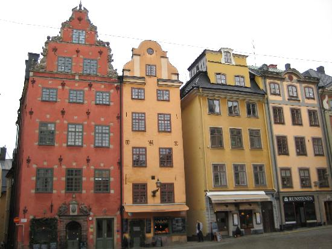

Stockholm  This was taken in Gamla Stan. Gamla Uppsala The first three Swedish kings are buried here, under ancient burial grounds. Perpetual Sun During the summer months, the sun takes forever to go down. This is a good thing.